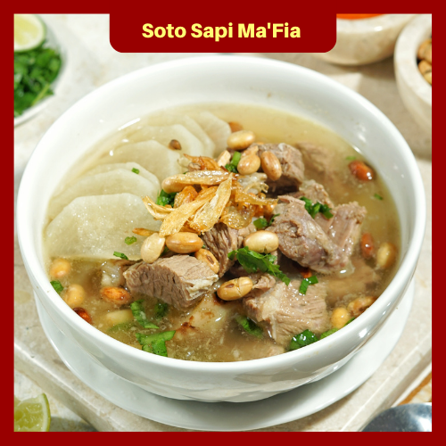
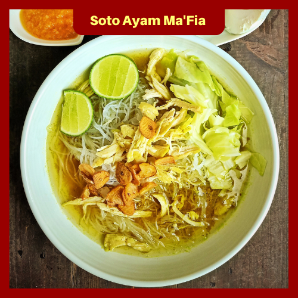

SOTO UNTUK SEMUA
Menyediakan makan ditempat dan dibawa pulang. Pemesanan luar kota bisa dilakukan dengan pengemasan freezer. Nyotolah dimana saja biar makin akrab sama teman, tetangga, dan keluarga. Karena soto menyatukan Indonesia.
Apa Kata Mereka?

Soto Sapi
Soto Daging Sapi memadukan gurihnya kuah soto dengan lezatnya potongan daging sapi. Yuk, coba soto daging sapi ala Ma'Fia, dijamin lezat!
Sapi Kecil : Rp 12.000
Mangkuk Mini
+ 1 Kerupuk
Sapi Normal : Rp 17.000
Mangkung sedang
+ 2 Kerupuk
Sapi Besar : Rp 35.000
Mangkuk Wajan
+ Es Teh, 3 Kerupuk
Soto Ayam
Soto ayam kuning rasanya gurih segar. Isian ayam suwir dan sayuran membuat soto ini mengenyangkan dinikmati dengan nasi hangat.

Ayam Kecil : Rp 10.000
Mangkuk Mini
+ 1 Kerupuk
Ayam Normal : Rp 15.000
Mangkuk Sedang
+ 1 Kerupuk
Ayam Besar : Rp 28.000
Mangkuk Besar
+ Es Teh, 2 Kerupuk

Buka Setiap Hari | 06.00 - 14.00
Sarapan soto biar seger dan semangat. Makan siang soto seger sampe gobyos. Selalu soto jadi andalan saat bingung mau makan apa. Jadi? Nyoto di Ma'Fia aja deh